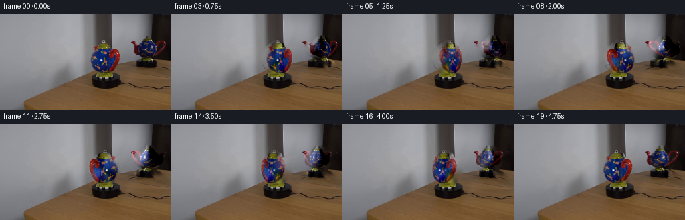
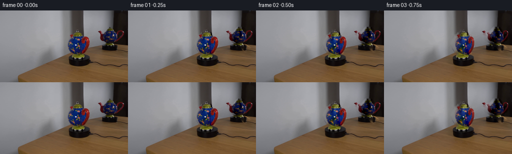

CODING AGENTS AS PIXEL WORLD MODELS
traex/GPT-5.6-Sol · 0121
点击播放 · 原生 RGB 像素
逐轮保存的候选
回放视频、检查图与代码变化。
每份候选均可单独播放。实际图片检查记录在下方工具轨迹中。
候选 01播放与检查图
点击播放 · 原生 RGB 像素


展开代码变化
--- 上一保存版本
+++ 本次保存版本
@@ -0,0 +1,170 @@
+from pathlib import Path
+import math
+
+import cv2
+import numpy as np
+from PIL import Image
+
+import artifact_io
+
+
+H, W = 144, 256
+
+
+def smoothstep(x, lo, hi):
+ x = np.clip((x - lo) / (hi - lo), 0.0, 1.0)
+ return x * x * (3.0 - 2.0 * x)
+
+
+def polygon_coverage(points, scale=4):
+ """Antialiased polygon coverage, calculated only from numeric geometry."""
+ canvas = np.zeros((H * scale, W * scale), np.uint8)
+ p = np.rint(np.asarray(points, np.float32) * scale).astype(np.int32)
+ cv2.fillPoly(canvas, [p], 255, lineType=cv2.LINE_AA)
+ return cv2.resize(canvas, (W, H), interpolation=cv2.INTER_AREA).astype(np.float32) / 255.0
+
+
+def make_layers(first):
+ # Carefully traced visible outlines. The masks stop above the turntable so the
+ # stationary black platform is never moved with the pot.
+ main_poly = [
+ (152, 37), (159, 37), (160, 42), (164, 43), (166, 47),
+ (166, 50), (176, 51), (180, 56), (181, 68), (178, 78),
+ (172, 86), (166, 89), (149, 89), (142, 85), (137, 76),
+ (133, 65), (136, 57), (140, 53), (139, 48), (145, 47),
+ (147, 43), (152, 42)
+ ]
+ reflection_poly = [
+ (220, 31), (230, 34), (233, 38), (243, 39), (249, 44),
+ (248, 55), (242, 61), (236, 65), (234, 69), (246, 75),
+ (255, 78), (255, 85), (235, 84), (229, 80), (224, 73),
+ (214, 67), (206, 63), (200, 59), (195, 54), (196, 48),
+ (202, 44), (211, 42), (214, 37)
+ ]
+ coverages = [polygon_coverage(main_poly), polygon_coverage(reflection_poly)]
+
+ union = np.maximum(coverages[0], coverages[1])
+ # Give inpainting a solid interior and two pixels beyond the foreground edge.
+ hard = (union > 0.02).astype(np.uint8) * 255
+ hard = cv2.dilate(hard, np.ones((5, 5), np.uint8), iterations=1)
+ bgr = cv2.cvtColor(first, cv2.COLOR_RGB2BGR)
+ clean = cv2.cvtColor(cv2.inpaint(bgr, hard, 5, cv2.INPAINT_TELEA), cv2.COLOR_BGR2RGB).astype(np.float32)
+
+ original = first.astype(np.float32)
+ discrepancy = np.sqrt(np.sum((original - clean) ** 2, axis=2))
+ layers = []
+ base = original.copy()
+ for index, coverage in enumerate(coverages):
+ # Suppress true holes (background seen through a handle) while retaining
+ # the complete colored and dark outline. This also gives naturally soft edges.
+ evidence = smoothstep(discrepancy, 1.5, 8.0)
+ alpha = coverage * evidence
+ alpha = np.maximum(alpha, coverage * smoothstep(discrepancy, 8.0, 18.0))
+ alpha = cv2.GaussianBlur(alpha, (3, 3), 0.42)
+ alpha = np.clip(alpha, 0.0, 1.0)
+ delta = (original - clean) * alpha[..., None]
+ base -= delta
+
+ ys, xs = np.where(alpha > 0.01)
+ pad = 5
+ x0, x1 = max(0, int(xs.min()) - pad), min(W, int(xs.max()) + pad + 1)
+ y0, y1 = max(0, int(ys.min()) - pad), min(H, int(ys.max()) + pad + 1)
+ layers.append({
+ "box": (x0, y0, x1, y1),
+ "delta": delta[y0:y1, x0:x1].copy(),
+ "alpha": alpha[y0:y1, x0:x1].copy(),
+ "reflection": bool(index),
+ })
+ return base, layers
+
+
+def rotating_layer(layer, angle):
+ """A periodic, perspective-like yaw of an extracted photographic layer.
+
+ Front texture gradually gives way to the inferred back (a subdued horizontal
+ reversal), while a cylindrical remap moves markings over the curved body.
+ """
+ delta0 = layer["delta"]
+ alpha0 = layer["alpha"]
+ h, w = alpha0.shape
+ direction = -1.0 if layer["reflection"] else 1.0
+ local_angle = angle * direction
+ sn, cs = math.sin(local_angle), math.cos(local_angle)
+
+ back_delta = np.flip(delta0, axis=1).copy()
+ back_alpha = np.flip(alpha0, axis=1).copy()
+ # The unobserved rear surface is inferred from the visible side. Its contrasts
+ # are slightly quieter, as they would be away from the key light.
+ back_delta *= 0.93
+ mix = 0.5 - 0.5 * cs
+ mix = mix * mix * (3.0 - 2.0 * mix)
+ delta = delta0 * (1.0 - mix) + back_delta * mix
+ alpha = alpha0 * (1.0 - mix) + back_alpha * mix
+
+ yy, xx = np.mgrid[0:h, 0:w].astype(np.float32)
+ cx, cy = (w - 1) * 0.5, (h - 1) * 0.55
+ nx = (xx - cx) / max(1.0, w * 0.5)
+ ny = (yy - cy) / max(1.0, h * 0.5)
+ # Curved-surface texture motion is strongest at the broad belly and dies at edges.
+ belly = np.clip(1.0 - nx * nx, 0.0, 1.0)
+ vertical = 0.48 + 0.52 * np.exp(-1.7 * ny * ny)
+ flow = direction * sn * (0.115 * w) * belly * vertical
+ map_x = (xx - flow).astype(np.float32)
+ map_y = yy.astype(np.float32)
+ delta = cv2.remap(delta, map_x, map_y, cv2.INTER_CUBIC,
+ borderMode=cv2.BORDER_CONSTANT, borderValue=0)
+ alpha = cv2.remap(alpha, map_x, map_y, cv2.INTER_CUBIC,
+ borderMode=cv2.BORDER_CONSTANT, borderValue=0)
+
+ # A mild silhouette foreshortening and depth parallax. At zero angle this is
+ # exactly identity; mirror parallax has the physically opposite screen direction.
+ sx = 0.79 + 0.21 * abs(cs)
+ shear = direction * 0.045 * sn
+ shift = direction * 2.1 * sn
+ matrix = np.array([
+ [sx, shear, cx + shift - sx * cx - shear * cy],
+ [0.0, 1.0, 0.0]
+ ], dtype=np.float32)
+ delta = cv2.warpAffine(delta, matrix, (w, h), flags=cv2.INTER_CUBIC,
+ borderMode=cv2.BORDER_CONSTANT, borderValue=0)
+ alpha = cv2.warpAffine(alpha, matrix, (w, h), flags=cv2.INTER_CUBIC,
+ borderMode=cv2.BORDER_CONSTANT, borderValue=0)
+
+ # Soft side occlusion reinforces the round volume, without introducing drawn detail.
+ edge = np.clip(1.0 - 0.12 * (np.abs((xx - cx) / max(1.0, w * 0.5)) ** 3)
+ * (0.35 + 0.65 * abs(sn)), 0.82, 1.0)
+ delta *= edge[..., None]
+ alpha = np.clip(alpha, 0.0, 1.0)
+ return delta, alpha
+
+
+def generate():
+ case_dir = Path(__file__).resolve().parent
+ first = np.asarray(Image.open(case_dir / "first_frame.png").convert("RGB"), dtype=np.uint8)
+ if first.shape != (H, W, 3):
+ raise ValueError(f"first_frame.png must be {(W, H)}, got {first.shape}")
+
+ base, layers = make_layers(first)
+ frames = [first.copy()]
+ # One complete physical revolution in five seconds at a constant angular velocity.
+ # Frame samples are at t = i/4; the endpoint lies one sample before 5.0 s.
+ angular_speed = 2.0 * math.pi / 5.0
+ for i in range(1, 20):
+ angle = angular_speed * (i / 4.0)
+ frame = base.copy()
+ for layer in layers:
+ moved_delta, _ = rotating_layer(layer, angle)
+ x0, y0, x1, y1 = layer["box"]
+ frame[y0:y1, x0:x1] += moved_delta
+ frame = np.clip(np.rint(frame), 0, 255).astype(np.uint8)
+ frames.append(frame)
+
+ frames = np.stack(frames, axis=0)
+ # Contract invariants, including exact source preservation.
+ assert frames.shape == (20, H, W, 3) and frames.dtype == np.uint8
+ assert np.array_equal(frames[0], first)
+ artifact_io.save(frames, case_dir)
+
+
+if __name__ == "__main__":
+ generate()
可观测工具轨迹
实际执行的命令与返回图片。
命令 1exit 0
/bin/bash -lc "cat prompt.txt && printf '\\n--- GENERATION_RULES.md ---\\n' && cat GENERATION_RULES.md"
命令 2exit 0
/bin/bash -lc "find . -maxdepth 2 -type f -printf '%p\\t%k KB\\n' | sort && printf '\\nTools:\\n' && command -v ffmpeg || true && command -v python3 || true"
命令 3exit 0
/bin/bash -lc "python3 - <<'PY'
from PIL import Image
im=Image.open('first_frame.png')
print(im.mode, im.size)
print('bbox', im.getbbox())
print('extrema', im.getextrema())
PY"命令 4exit 0
/bin/bash -lc "sed -n '1,240p' artifact_io.py"
命令 5exit 0
/bin/bash -lc "python3 - <<'PY'
try:
import cv2; print('cv2',cv2.__version__)
except Exception as e: print('no cv2',e)
try:
import scipy; print('scipy',scipy.__version__)
except Exception as e: print('no scipy',e)
try:
import skimage; print('skimage',skimage.__version__)
except Exception as e: print('no skimage',e)
PY"命令 6exit 0
/bin/bash -lc "python3 - <<'PY'
from PIL import Image
import numpy as np
im=np.array(Image.open('first_frame.png'))
# ascii by average blocks, luminance; 64x36
chars=' .,:;irsXA253hMHGS#9B&@'
y=(im[...,0]*.2126+im[...,1]*.7152+im[...,2]*.0722)
for yy in range(0,144,4):
s=''
for xx in range(0,256,4):
q=y[yy:yy+4,xx:xx+4].mean()/255
s+=chars[min(len(chars)-1,int(q*len(chars)))]
print(s)
PY"命令 7exit 0
/bin/bash -lc "cat > .tmp/analyze.py <<'PY'
import cv2, numpy as np
from PIL import Image
im=np.array(Image.open('first_frame.png'))
# Lab kmeans K=12
lab=cv2.cvtColor(im,cv2.COLOR_RGB2LAB)
Z=lab.reshape(-1,3).astype(np.float32)
crit=(cv2.TERM_CRITERIA_EPS+cv2.TERM_CRITERIA_MAX_ITER,50,.2)
_,labels,c=cv2.kmeans(Z,12,None,crit,10,cv2.KMEANS_PP_CENTERS)
c_rgb=cv2.cvtColor(np.uint8(c[:,None,:]),cv2.COLOR_LAB2RGB)[:,0]
order=np.argsort(c_rgb.mean(1)); mp=np.zeros(12,int);mp[order]=np.arange(12)
ch='0123456789AB'
print('clusters dark->bright')
for j,i in enumerate(order): print(ch[j],i,c_rgb[i], 'n',sum(labels[:,0]==i))
L=mp[labels.reshape(144,256)]
# modal 4x4 labels
for y in range(0,144,4):
print(''.join(ch[np.bincount(L[y:y+4,x:x+4].ravel(),minlength=12).argmax()] for x in range(0,256,4)))
# broad statistics edge and chroma bboxes by rows
rgb=im.astype(float)
gray=cv2.cvtColor(im,cv2.COLOR_RGB2GRAY)
edge=cv2.Canny(gray,50,120)
print('edge row bins')
for y in range(0,144,8):
xs=np.where(edge[y:y+8].any(0))[0]; print(y, (xs.min(),xs.max(),len(xs)) if len(xs) else ())
print('samples')
for y in [0,20,40,60,80,100,120,140]:
print('y',y,[(x,im[y,x].tolist()) for x in range(0,256,16)])
PY
python3 .tmp/analyze.py"命令 8exit 0
/bin/bash -lc "python3 - <<'PY'
import cv2,numpy as np
from PIL import Image
im=np.array(Image.open('first_frame.png')).astype(int); R,G,B=im.transpose(2,0,1)
masks={
'blue':(B>R+25)&(B>G+15)&(B>40),
'red':(R>G+35)&(R>B+20)&(R>70),
'brown':(R>B+25)&(G>B+10)&(R>70),
'black':(R+G+B<105),
'gray':(np.max(im,2)-np.min(im,2)<12),
}
for name,m in masks.items():
print('\\n',name,'n',m.sum())
n,lab,stats,cents=cv2.connectedComponentsWithStats(m.astype('uint8'),8)
for i in np.argsort(stats[1:,4])[::-1][:12]+1:
x,y,w,h,a=stats[i]; print((x,y,w,h,a),np.round(cents[i],1))
print('runs by y')
for y in range(0,144,4):
xs=np.where(m[y:y+4].any(0))[0]
if len(xs):
# runs
cuts=np.r_[0,np.where(np.diff(xs)>1)[0]+1,len(xs)]
rs=[f'{xs[a]}-{xs[b-1]}' for a,b in zip(cuts[:-1],cuts[1:]) if b-a>=1]
print(y,','.join(rs))
PY"命令 9exit 0
/bin/bash -lc "python3 - <<'PY'
import cv2,numpy as np
from PIL import Image
im=cv2.imread('first_frame.png'); g=cv2.cvtColor(im,cv2.COLOR_BGR2GRAY)
# print contours canny around ROI main and refl
for name,(x0,y0,x1,y1) in {'main':(125,30,190,95),'ref':(190,28,255,90)}.items():
roi=im[y0:y1,x0:x1]; gr=cv2.cvtColor(roi,cv2.COLOR_BGR2GRAY); e=cv2.Canny(gr,25,70)
cs,_=cv2.findContours(e,cv2.RETR_LIST,cv2.CHAIN_APPROX_SIMPLE)
print(name)
for c in sorted(cs,key=cv2.contourArea,reverse=True)[:20]:
x,y,w,h=cv2.boundingRect(c); print(round(cv2.contourArea(c),1),(x+x0,y+y0,w,h))
# gradient ascii 2 pix
print('edgeascii')
for y in range(0,y1-y0,2): print(''.join('#' if e[y:y+2,x:x+2].any() else ' ' for x in range(0,x1-x0,2)))
PY"命令 10exit 0
/bin/bash -lc "cat > .tmp/masks.py <<'PY'
import cv2,numpy as np
from PIL import Image
im=np.array(Image.open('first_frame.png')); hsv=cv2.cvtColor(im,cv2.COLOR_RGB2HSV)
def gc(name,rect,seeds_fg,seeds_bg,its=8):
m=np.full(im.shape[:2],cv2.GC_BGD,np.uint8)
x,y,w,h=rect;m[y:y+h,x:x+w]=cv2.GC_PR_BGD
m[seeds_fg]=cv2.GC_FGD;m[seeds_bg]=cv2.GC_BGD
bg=np.zeros((1,65),float);fg=np.zeros((1,65),float)
cv2.grabCut(cv2.cvtColor(im,cv2.COLOR_RGB2BGR),m,None,bg,fg,its,cv2.GC_INIT_WITH_MASK)
o=(m==1)|(m==3)
print(name,o.sum(),cv2.boundingRect(o.astype('uint8')))
x0,y0,w,h=rect
for yy in range(y0,y0+h,2): print(''.join('##' if o[yy:yy+2,xx:xx+2].any() else ' ' for xx in range(x0,x0+w,2)))
Image.fromarray((o*255).astype('uint8')).save('.tmp/'+name+'.png')
return o
# main seeds saturated, object color/dark local; fg definite only strong chroma
Y=np.indices(im.shape[:2])[0];X=np.indices(im.shape[:2])[1]
sat=hsv[...,1]
fg=(X>=134)&(X<=180)&(Y>=37)&(Y<=94)&((sat>45)|((im.mean(2)<55)&(Y>50)))
bg=((X<132)|(X>183)|(Y<34)|(Y>96))
main=gc('main',(130,34,55,63),fg,bg)
fg2=(X>=194)&(X<=250)&(Y>=34)&(Y<=82)&((sat>40)|(im.mean(2)<55))
bg2=((X<192)|(Y<31)|(Y>85))
ref=gc('ref',(192,31,63,55),fg2,bg2)
PY
python3 .tmp/masks.py"命令 11exit 0
/bin/bash -lc "python3 - <<'PY'
from PIL import Image
import numpy as np,cv2
im=np.array(Image.open('first_frame.png')); hsv=cv2.cvtColor(im,cv2.COLOR_RGB2HSV)
for y in range(30,100,2):
s=''
for x in range(125,191):
p=im[y:y+2,x]; r,g,b=p.mean(0); sat=(max(r,g,b)-min(r,g,b))
if r+g+b<80:c='@'
elif r+g+b<145:c='K'
elif b>r+25 and b>g+15:c='B'
elif r>g+35 and r>b+30:c='R'
elif r>b+25 and g>b+8:c='o'
elif sat<15 and (r+g+b)/3>140:c='.'
elif sat<18:c='g'
else:c='x'
s+=c
print(f'{y:03}',s)
PY"命令 12exit 0
/bin/bash -lc "cat > .tmp/seg.py <<'PY'
import numpy as np,cv2
from PIL import Image,ImageDraw
im=np.array(Image.open('first_frame.png')).astype(np.float32); h,w,_=im.shape
# polynomial per col/channel using y 0:34 robust degree2
ys=np.arange(0,34); out=np.zeros_like(im)
for x in range(w):
for c in range(3):
z=np.polyfit(ys,im[:34,x,c],2)
out[:,x,c]=np.polyval(z,np.arange(h))
out=np.clip(out,0,255)
# polygons
polys={
'main':[(152,37),(159,37),(160,42),(164,43),(166,47),(166,50),(177,51),(180,56),(180,71),(177,80),(171,87),(166,89),(147,88),(142,84),(137,75),(134,65),(137,56),(140,53),(139,48),(145,47),(147,43),(152,42)],
'ref':[(220,32),(230,34),(232,38),(243,39),(248,44),(247,55),(240,61),(235,64),(234,69),(246,75),(255,78),(255,84),(234,83),(229,80),(224,73),(214,66),(206,62),(200,59),(196,54),(197,48),(203,44),(211,43),(214,38)]}
for name,p in polys.items():
coarse=np.zeros((h,w),np.uint8);cv2.fillPoly(coarse,[np.array(p,np.int32)],255)
d=np.sqrt(((im-out)**2).sum(2))
alpha=np.clip((d-6)/18,0,1)*(coarse/255)
# preserve probable dark/saturated obj
hsv=cv2.cvtColor(im.astype(np.uint8),cv2.COLOR_RGB2HSV)
likely=((hsv[...,1]>40)&(d>8))|((im.mean(2)<55)&(d>12))
alpha=np.maximum(alpha,likely*(coarse/255)*.9)
# smooth edges a touch
#alpha=cv2.GaussianBlur(alpha,(3,3),.5)
print(name,'alpha pixels',alpha.sum(), 'd avg coarse',d[coarse>0].mean())
x,y,w0,h0=cv2.boundingRect(coarse)
for yy in range(y,y+h0,2):
print(''.join('##' if alpha[yy:yy+2,xx:xx+2].mean()>.35 else '++' if alpha[yy:yy+2,xx:xx+2].mean()>.1 else ' ' for xx in range(x,x+w0,2)))
Image.fromarray(np.uint8(alpha*255)).save('.tmp/'+name+'a.png')
Image.fromarray(np.uint8(out)).save('.tmp/bgpoly.png')
PY
python3 .tmp/seg.py"命令 13exit 0
/bin/bash -lc "cat > generate.py <<'PY'
from pathlib import Path
import math
import cv2
import numpy as np
from PIL import Image
import artifact_io
H, W = 144, 256
def smoothstep(x, lo, hi):
x = np.clip((x - lo) / (hi - lo), 0.0, 1.0)
return x * x * (3.0 - 2.0 * x)
def polygon_coverage(points, scale=4):
\"\"\"Antialiased polygon coverage, calculated only from numeric geometry.\"\"\"
canvas = np.zeros((H * scale, W * scale), np.uint8)
p = np.rint(np.asarray(points, np.float32) * scale).astype(np.int32)
cv2.fillPoly(canvas, [p], 255, lineType=cv2.LINE_AA)
return cv2.resize(canvas, (W, H), interpolation=cv2.INTER_AREA).astype(np.float32) / 255.0
def make_layers(first):
# Carefully traced visible outlines. The masks stop above the turntable so the
# stationary black platform is never moved with the pot.
main_poly = [
(152, 37), (159, 37), (160, 42), (164, 43), (166, 47),
(166, 50), (176, 51), (180, 56), (181, 68), (178, 78),
(172, 86), (166, 89), (149, 89), (142, 85), (137, 76),
(133, 65), (136, 57), (140, 53), (139, 48), (145, 47),
(147, 43), (152, 42)
]
reflection_poly = [
(220, 31), (230, 34), (233, 38), (243, 39), (249, 44),
(248, 55), (242, 61), (236, 65), (234, 69), (246, 75),
(255, 78), (255, 85), (235, 84), (229, 80), (224, 73),
(214, 67), (206, 63), (200, 59), (195, 54), (196, 48),
(202, 44), (211, 42), (214, 37)
]
coverages = [polygon_coverage(main_poly), polygon_coverage(reflection_poly)]
union = np.maximum(coverages[0], coverages[1])
# Give inpainting a solid interior and two pixels beyond the foreground edge.
hard = (union > 0.02).astype(np.uint8) * 255
hard = cv2.dilate(hard, np.ones((5, 5), np.uint8), iterations=1)
bgr = cv2.cvtColor(first, cv2.COLOR_RGB2BGR)
clean = cv2.cvtColor(cv2.inpaint(bgr, hard, 5, cv2.INPAINT_TELEA), cv2.COLOR_BGR2RGB).astype(np.float32)
original = first.astype(np.float32)
discrepancy = np.sqrt(np.sum((original - clean) ** 2, axis=2))
layers = []
base = original.copy()
for index, coverage in enumerate(coverages):
# Suppress true holes (background seen through a handle) while retaining
# the complete colored and dark outline. This also gives naturally soft edges.
evidence = smoothstep(discrepancy, 1.5, 8.0)
alpha = coverage * evidence
alpha = np.maximum(alpha, coverage * smoothstep(discrepancy, 8.0, 18.0))
alpha = cv2.GaussianBlur(alpha, (3, 3), 0.42)
alpha = np.clip(alpha, 0.0, 1.0)
delta = (original - clean) * alpha[..., None]
base -= delta
ys, xs = np.where(alpha > 0.01)
pad = 5
x0, x1 = max(0, int(xs.min()) - pad), min(W, int(xs.max()) + pad + 1)
y0, y1 = max(0, int(ys.min()) - pad), min(H, int(ys.max()) + pad + 1)
layers.append({
\"box\": (x0, y0, x1, y1),
\"delta\": delta[y0:y1, x0:x1].copy(),
\"alpha\": alpha[y0:y1, x0:x1].copy(),
\"reflection\": bool(index),
})
return base, layers
def rotating_layer(layer, angle):
\"\"\"A periodic, perspective-like yaw of an extracted photographic layer.
Front texture gradually gives way to the inferred back (a subdued horizontal
reversal), while a cylindrical remap moves markings over the curved body.
\"\"\"
delta0 = layer[\"delta\"]
alpha0 = layer[\"alpha\"]
h, w = alpha0.shape
direction = -1.0 if layer[\"reflection\"] else 1.0
local_angle = angle * direction
sn, cs = math.sin(local_angle), math.cos(local_angle)
back_delta = np.flip(delta0, axis=1).copy()
back_alpha = np.flip(alpha0, axis=1).copy()
# The unobserved rear surface is inferred from the visible side. Its contrasts
# are slightly quieter, as they would be away from the key light.
back_delta *= 0.93
mix = 0.5 - 0.5 * cs
mix = mix * mix * (3.0 - 2.0 * mix)
delta = delta0 * (1.0 - mix) + back_delta * mix
alpha = alpha0 * (1.0 - mix) + back_alpha * mix
yy, xx = np.mgrid[0:h, 0:w].astype(np.float32)
cx, cy = (w - 1) * 0.5, (h - 1) * 0.55
nx = (xx - cx) / max(1.0, w * 0.5)
ny = (yy - cy) / max(1.0, h * 0.5)
# Curved-surface texture motion is strongest at the broad belly and dies at edges.
belly = np.clip(1.0 - nx * nx, 0.0, 1.0)
vertical = 0.48 + 0.52 * np.exp(-1.7 * ny * ny)
flow = direction * sn * (0.115 * w) * belly * vertical
map_x = (xx - flow).astype(np.float32)
map_y = yy.astype(np.float32)
delta = cv2.remap(delta, map_x, map_y, cv2.INTER_CUBIC,
borderMode=cv2.BORDER_CONSTANT, borderValue=0)
alpha = cv2.remap(alpha, map_x, map_y, cv2.INTER_CUBIC,
borderMode=cv2.BORDER_CONSTANT, borderValue=0)
# A mild silhouette foreshortening and depth parallax. At zero angle this is
# exactly identity; mirror parallax has the physically opposite screen direction.
sx = 0.79 + 0.21 * abs(cs)
shear = direction * 0.045 * sn
shift = direction * 2.1 * sn
matrix = np.array([
[sx, shear, cx + shift - sx * cx - shear * cy],
[0.0, 1.0, 0.0]
], dtype=np.float32)
delta = cv2.warpAffine(delta, matrix, (w, h), flags=cv2.INTER_CUBIC,
borderMode=cv2.BORDER_CONSTANT, borderValue=0)
alpha = cv2.warpAffine(alpha, matrix, (w, h), flags=cv2.INTER_CUBIC,
borderMode=cv2.BORDER_CONSTANT, borderValue=0)
# Soft side occlusion reinforces the round volume, without introducing drawn detail.
edge = np.clip(1.0 - 0.12 * (np.abs((xx - cx) / max(1.0, w * 0.5)) ** 3)
* (0.35 + 0.65 * abs(sn)), 0.82, 1.0)
delta *= edge[..., None]
alpha = np.clip(alpha, 0.0, 1.0)
return delta, alpha
def generate():
case_dir = Path(__file__).resolve().parent
first = np.asarray(Image.open(case_dir / \"first_frame.png\").convert(\"RGB\"), dtype=np.uint8)
if first.shape "'!= (H, W, 3):
raise ValueError(f"first_frame.png must be {(W, H)}, got {first.shape}")
base, layers = make_layers(first)
frames = [first.copy()]
# One complete physical revolution in five seconds at a constant angular velocity.
# Frame samples are at t = i/4; the endpoint lies one sample before 5.0 s.
angular_speed = 2.0 * math.pi / 5.0
for i in range(1, 20):
angle = angular_speed * (i / 4.0)
frame = base.copy()
for layer in layers:
moved_delta, _ = rotating_layer(layer, angle)
x0, y0, x1, y1 = layer["box"]
frame[y0:y1, x0:x1] += moved_delta
frame = np.clip(np.rint(frame), 0, 255).astype(np.uint8)
frames.append(frame)
frames = np.stack(frames, axis=0)
# Contract invariants, including exact source preservation.
assert frames.shape == (20, H, W, 3) and frames.dtype == np.uint8
assert np.array_equal(frames[0], first)
artifact_io.save(frames, case_dir)
if __name__ == "__main__":
generate()
PY
python3 generate.py
python3 - <<'"'PY'
from pathlib import Path
import numpy as np
from PIL import Image
z=np.load('pixels.npz')['pixels']
frames=np.stack([np.array(Image.open(f'frames/{i:02d}.png')) for i in range(20)])
first=np.array(Image.open('first_frame.png'))
print('frames',frames.shape,frames.dtype,'exact first',np.array_equal(frames[0],first))
for i in range(20):
d=np.abs(frames[i].astype(np.int16)-first.astype(np.int16))
changed=np.any(d,2)
ys,xs=np.where(changed)
print(i,'changed',int(changed.sum()),'mae',round(float(d.mean()),3),'bbox',None if not len(xs) else (int(xs.min()),int(ys.min()),int(xs.max()),int(ys.max())))
print('artifacts',[(p.name,p.stat().st_size) for p in map(Path,['pixels.npz','inspection.png','transition_check.png','index.html'])])
PY"命令 14exit 0
/bin/bash -lc "python3 - <<'PY'
import numpy as np
from PIL import Image
f=np.stack([np.array(Image.open(f'frames/{i:02d}.png')).astype(float) for i in range(20)])
# temporal per-frame deltas, whole and invariant zones
for i in range(1,20):
d=np.abs(f[i]-f[i-1]);
print(i, 'step_mae',round(d.mean(),3),'step_max',int(d.max()),'moving_pixels',int(np.any(d>1,3 if False else 2).sum()))
print('static outside moving bbox maxdiff',np.abs(f[:, :30]-f[0,:30]).max(),np.abs(f[:,91:]-f[0,91:]).max(),np.abs(f[:,:,:130]-f[0,:,:130]).max())
PY"命令 15exit 0
/bin/bash -lc 'python3 -m py_compile generate.py artifact_io.py && git status --short 2>/dev/null || true && du -sh . frames'
保存候选 1 份；完成命令 15 次；可验证图片返回 0 张。原始 API 响应与完整日志保留在本地。